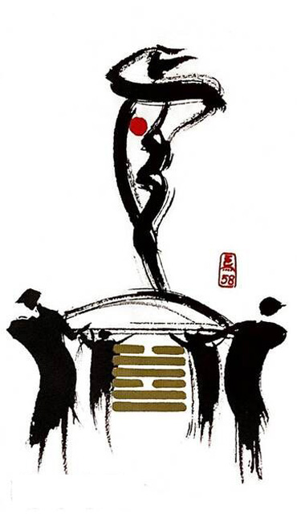

중택태(기쁠 태)
평괘 28
연못이 중첩(기쁨+ 기쁨 -> 행복, 소녀 + 소녀)
기쁜 마음은 행복을 불러온다무대에서 끼를 발산하고 있는 사람.지켜보는 관객들이 박수를 치며 환호하는 상황을 표현한 그림
기쁨.즐거움.행복.상호작용.친선.호의.열린대화.소통.자기표현.창의적 일.설득.연설.협력.화합.긍정적.발전적.구설수.소문.비방
연애운
여성이 주도하는 관계.여성이 더 능력있고 강함
사업운
리더일 경우 능력 있고 사람들의 인정을 받음. 직원은 뛰어난 실력으로 시기.질투
속마음
썸여성이 리드해주기를 바라는 마음.즐거운 마음
1년 이상여성이 더 강하고 능력 있다고 생각하는 마음.행복한 마음
이별 후여성의 입김에 따라 좌지우지 되는 마음
솔로연애운
새로운 이성 생길 확률 크다
건강운
폐.위.대장염 주의